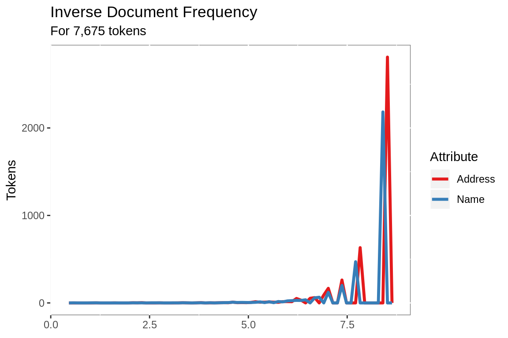

Flexible String Matching
This example of data-driven matching using term frequency/inverse document frequecy was adapted from Flexible String Matching Against Large Databases in Practice.
# general hospital information from CMS
general <- fread("https://data.medicare.gov/api/views/xubh-q36u/rows.csv?accessType=DOWNLOAD")
# list of hospitals in Alabama with name and address from
# https://en.wikipedia.org/wiki/List_of_hospitals_in_Alabama
alhosp.raw <- rio::import("/media/matt/st1000/r/webpage/alhosp.xlsx")Objective: Match the list of 138 Alabama hospitals available on Wikipedia to the 4,772 hospitals registered with Medicare.
# prep cms list
general <- general %>%
rename(ProviderID = `Provider ID`,
Hospital = `Hospital Name`) %>%
mutate(City = str_to_title(City),
Zip = ifelse(nchar(`ZIP Code`) == 5,
as.character(`ZIP Code`),
paste0("0", as.character(`ZIP Code`))))
# extract address and zip from notes column
# remove superscript from names
# exclude closed hospitals
alhosp <- alhosp.raw %>%
separate(Notes, c("Notes", "Details"), sep = "; ") %>%
separate(Notes, c("Address", "Extra"), sep = ", ") %>%
mutate(Zip = str_sub(Extra, 1, 5),
Hospital = str_remove_all(Hospital, "\\[.*$")) %>%
filter(!is.na(Zip)) %>%
filter(str_detect(Zip, "[0-9]")) %>%
filter(is.na(Details) |
!str_detect(Details, "Closed")) %>%
mutate(Id = row_number())14 closed hospitals were removed from the list of Alabama hospitals and address and zip code extracted from the ‘Notes’ column.
The first step is tokenizing the name and address attributes. US Postal guidelines are used to standardize the address tokens.
# calculate l2 norm of attribute ----
euc_norm <- function(x){
x1 <- as.matrix(x)
out <- norm(x1, "f")
}
# create dynamic weight from l2 norm of two attributes ----
dynamic_weight <- function(x, y){
out <- sqrt(sum((x^2) + (y^2)))
}
# prepare for matching ----
# calculate term frequency and inverse document frequency from
# match table name & address
# compute dynamic weight
# number of unique values by attribute
# number of unique names & addresses
Base.size <-
as_tibble(
list(
"size.name" =
length(unique(general$Hospital)),
"size.address" =
length(unique(general$Address)))
)
# prep target -----
# split name into tokens
# one token per row
# count token appearance per record id
# count record ids per token
# log of total names/records per token is inverse doc freq
Base.idf.name <- general %>%
select(tid = ProviderID,
Name = Hospital) %>%
tidytext::unnest_tokens(word, Name) %>%
filter(!is.na(word)) %>%
select(tid, token = word) %>%
group_by(tid, token) %>%
summarise(term.freq = n()) %>%
group_by(token) %>%
mutate(doc.freq = n_distinct(tid),
idf = log((Base.size$size.name)/(doc.freq))) %>%
ungroup() %>%
mutate(weights = term.freq * idf) %>%
select(tid, token, term.freq, idf, weights)
# repeat for address
# standardize address tokens
Base.idf.add <- general %>%
select(tid = ProviderID,
Address) %>%
tidytext::unnest_tokens(word, Address) %>%
filter(!is.na(word)) %>%
left_join(postal.standards, by = c("word" = "address.token")) %>%
mutate(token = ifelse(is.na(address.standard), word, address.standard)) %>%
select(tid, token) %>%
group_by(tid, token) %>%
summarise(term.freq = n()) %>%
group_by(token) %>%
mutate(doc.freq = n_distinct(tid),
idf = log((Base.size$size.address)/(doc.freq))) %>%
ungroup() %>%
mutate(weights = term.freq * idf) %>%
select(tid, token, term.freq, idf, weights)
# compute total weight for each record's name & address
# then dynamic weight
Base.length <- Base.idf.name %>%
select(tid, weights) %>%
nest(-tid) %>%
mutate(l.x = map_dbl(data, euc_norm)) %>%
select(tid, l.x) %>%
full_join(Base.idf.add %>%
select(tid, weights) %>%
nest(-tid) %>%
mutate(l.y = map_dbl(data, euc_norm)) %>%
select(tid, l.y)) %>%
mutate_if(is.numeric, replace_na, 0) %>%
group_by(tid) %>%
mutate(len = map2_dbl(l.x, l.y, dynamic_weight)) %>%
ungroup() %>%
select(tid, l.x, l.y, len)
# weight by name token
idf.name <- Base.idf.name %>%
select(token, idf) %>%
unique()
# weight by address token
idf.address <- Base.idf.add %>%
select(token, idf) %>%
unique()The tokens are weighted based on term frequency and inverse document frequency in the target data set. Using TF/IDF to weight the tokens increases the match value of rare terms and decreases the match value of common words, so that a match including Keller is
3 times as important as a match including both medical and center.
idf.name %>%
mutate(Attribute = "Name") %>%
bind_rows(idf.address %>%
mutate(Attribute = "Address")) %>%
ggplot(aes(idf))+
geom_freqpoly(aes(color = Attribute),
bins = 70,
size = 1.2)+
scale_color_brewer(palette = "Set1")+
labs(title = "Inverse Document Frequency",
subtitle = paste("For",
comma(sum(nrow(idf.name),
nrow(idf.address))),
"tokens"),
x = NULL,
y = "Tokens")+
theme(panel.background =
element_rect(fill = "white",
colour = "grey50"))
The weights calculated on the target data are then applied to the attribute tokens from the search data set.
The attribute weights for each record are normalized and then dynamically weighted, increasing the weight of rare name tokens in the presence of common address tokens and vice versa.
# normalize name weights
Base.weights.name <- Base.idf.name %>%
inner_join(Base.length, by = "tid") %>%
mutate(t.weight = weights/l.x,
t.weight.dyn = weights/len) %>%
select(tid, token, t.weight.dyn)
# normalize address weights
Base.weights.add <- Base.idf.add %>%
inner_join(Base.length, by = "tid") %>%
mutate(t.weight = weights/l.y,
t.weight.dyn = weights/len) %>%
select(tid, token, t.weight.dyn)
# update to data.tables
setDT(Base.weights.name)
setDT(Base.weights.add)
# prep source ----
# apply weighting to matching name
# split by tokens and count
# use idf from match table
Search.idf.name <- alhosp %>%
select(sid = Id,
Name = Hospital) %>%
tidytext::unnest_tokens(word, Name) %>%
filter(!is.na(word)) %>%
select(sid, token = word) %>%
group_by(sid, token) %>%
summarise(term.freq = n()) %>%
ungroup() %>%
inner_join(idf.name) %>%
mutate(weights = term.freq * idf) %>%
select(sid, token, weights)
# apply weighting to matching address
Search.idf.add <- alhosp %>%
select(sid = Id,
Address) %>%
tidytext::unnest_tokens(word, Address) %>%
filter(!is.na(word)) %>%
left_join(postal.standards, by = c("word" = "address.token")) %>%
mutate(token = ifelse(is.na(address.standard), word, address.standard)) %>%
select(sid, token) %>%
group_by(sid, token) %>%
summarise(term.freq = n()) %>%
ungroup() %>%
inner_join(idf.address) %>%
mutate(weights = term.freq * idf) %>%
select(sid, token, weights)
# compute total weight for each record's name & address
# then dynamic weight
Search.length <- Search.idf.name %>%
select(sid, weights) %>%
nest(-sid) %>%
mutate(l.x = map_dbl(data, euc_norm)) %>%
select(sid, l.x) %>%
full_join(Search.idf.add %>%
select(sid, weights) %>%
nest(-sid) %>%
mutate(l.y = map_dbl(data, euc_norm)) %>%
select(sid, l.y)) %>%
mutate_if(is.numeric, replace_na, 0) %>%
group_by(sid) %>%
mutate(len = map2_dbl(l.x, l.y, dynamic_weight)) %>%
ungroup() %>%
select(sid, l.x, l.y, len)
# normalize name weights
Search.weights.name <- Search.idf.name %>%
inner_join(Search.length, by = "sid") %>%
mutate(s.weight = weights/l.x,
s.weight.dyn = weights/len) %>%
select(sid, token, s.weight.dyn)
# normalize address weights
Search.weights.add <- Search.idf.add %>%
inner_join(Search.length, by = "sid") %>%
mutate(s.weight = weights/l.y,
s.weight.dyn = weights/len) %>%
select(sid, token, s.weight.dyn)
setDT(Search.weights.name)
setDT(Search.weights.add)The attribute tokens are matched and the combined weight cacluated for each pair of matching records. Matches below a user-defined threshold are excluded.
# exclude matches below
threshold <- 0.3
# match name tokens
match.name <-
Base.weights.name[Search.weights.name,
on = "token",
allow.cartesian = T
][,
.(weight.x.dyn =
sum(t.weight.dyn *
s.weight.dyn)),
by = c("tid",
"sid")
][weight.x.dyn >= threshold]
setnames(match.name,
c("tid", "sid"),
c("ProviderId", "Id"))
setkeyv(match.name, cols = c("ProviderId", "Id"))
# match address tokens
match.add <-
Base.weights.add[Search.weights.add,
on = "token",
allow.cartesian = T
][,
.(weight.y.dyn =
sum(t.weight.dyn *
s.weight.dyn)),
by = c("tid",
"sid")
][weight.y.dyn >= threshold]
setnames(match.add,
c("tid", "sid"),
c("ProviderId", "Id"))
setkeyv(match.add, cols = c("ProviderId", "Id"))
# combine matches
match.weight <- merge(match.add, match.name, all = TRUE)
# add secondary attributes, city, state, zip
match.weight <- match.weight %>%
mutate(weight.x.dyn = ifelse(is.na(weight.x.dyn), 0,
weight.x.dyn),
weight.y.dyn = ifelse(is.na(weight.y.dyn), 0,
weight.y.dyn),
match.weight.dyn = weight.x.dyn + weight.y.dyn) %>%
select(ProviderId,
Id,
match.weight.dyn) %>%
left_join(general %>%
select(ProviderId = ProviderID,
Hospital,
City,
State,
Zip)) %>%
left_join(alhosp %>%
select(Id,
Hospital,
City,
State,
Zip), by = "Id")312 potential matches were identified. The remaining address components (city, state and zip), were used in combination with the match weights to refine the matches.
# calculate secondary matches
# rank search matches
matched <- match.weight %>%
mutate(City = str_to_lower(str_remove_all(City.x, " |'")) ==
str_to_lower(str_remove_all(City.y, " |'")),
State = State.x == State.y,
Zip = Zip.x == Zip.y,
secondary.weight = City + State + Zip,
weight = match.weight.dyn +
(secondary.weight / 3)) %>%
group_by(Id) %>%
mutate(rank.id = dense_rank(desc(weight))) %>%
ungroup() %>%
filter(rank.id == 1) %>%
mutate(strength = floor(weight))
# select best match by target record
matched.final <- matched %>%
filter(secondary.weight >= 2) %>%
group_by(ProviderId) %>%
filter(weight == max(weight))The 118 were further reduced to 87 by selecting the best match per target Id.
# exclude LTAC and behavioral hospitals from match rate calculation
ggplot(matched.final, aes(weight))+
geom_histogram(bins = 15,
fill = "#377EB8")+
labs(title =
paste0(round(nrow(matched.final)/
nrow(filter(alhosp,
!str_detect(Hospital,
"Beha|Long Term|LTAC"))),
2)*100,
"% of records matched"),
subtitle = paste(nrow(filter(matched.final, weight == 2)),
"exact matches"),
x = "Match Weight",
y = "Records")+
theme(panel.background =
element_rect(fill = "white",
colour = "grey50"))